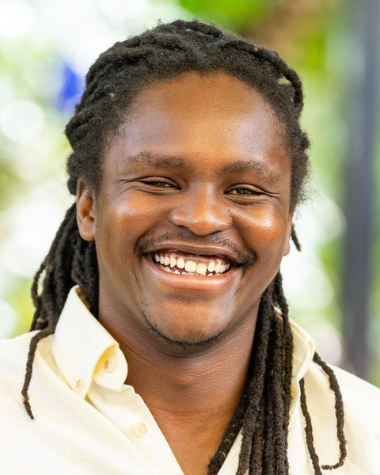
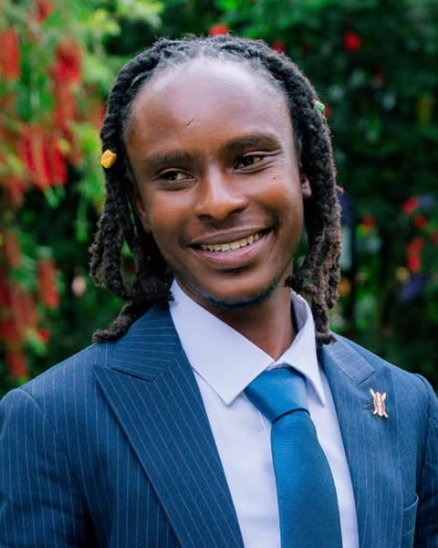
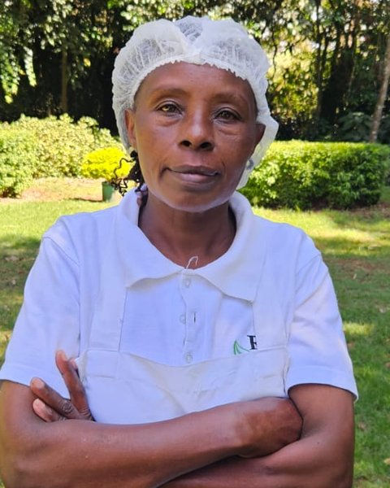
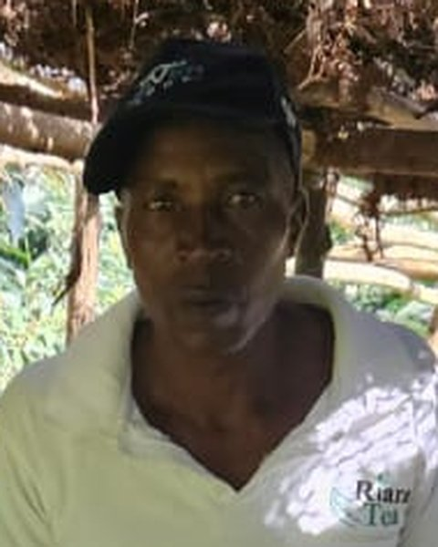

Grace Koinange
Owner & ChairpersonGrace is the owner of Riara and the keeper of its story. Grace guides the long-term vision for the farm, making sure it remains a family home, a working tea farm and a place where visitors feel welcome.
Riara is a family-run farm. These are the people who set its direction and make sure it stays true to its roots.
Grace is the owner of Riara and the keeper of its story. Grace guides the long-term vision for the farm, making sure it remains a family home, a working tea farm and a place where visitors feel welcome.

Kinyenje leads Riara day to day, from the tours and the tea shop to partnerships with schools, companies and travel operators. The goal: growing Riara into East Africa's home of tea tourism.

Karuga oversees Riara's finances, from budgeting and pricing to planning for the farm's future. Karuga's work keeps the business on a sound footing so the farm can keep investing in its people and its land.

Virginia runs the farmhouse kitchen. Virginia prepares the home-cooked Kenyan meals and teas served to our guests, using fresh produce from the farm and the surrounding Limuru community.

John looks after the land: the tea fields, the nursery and the avocado orchard. John leads the farm team through planting, pruning and plucking, and knows every row of tea on the estate.
Kamau runs Riara's technology, from this website and online bookings to the systems behind the shop. Kamau's work makes it easy for guests to find us, plan a visit and order tea from anywhere.
Read how Riara began, or book a tour and meet the team in person.